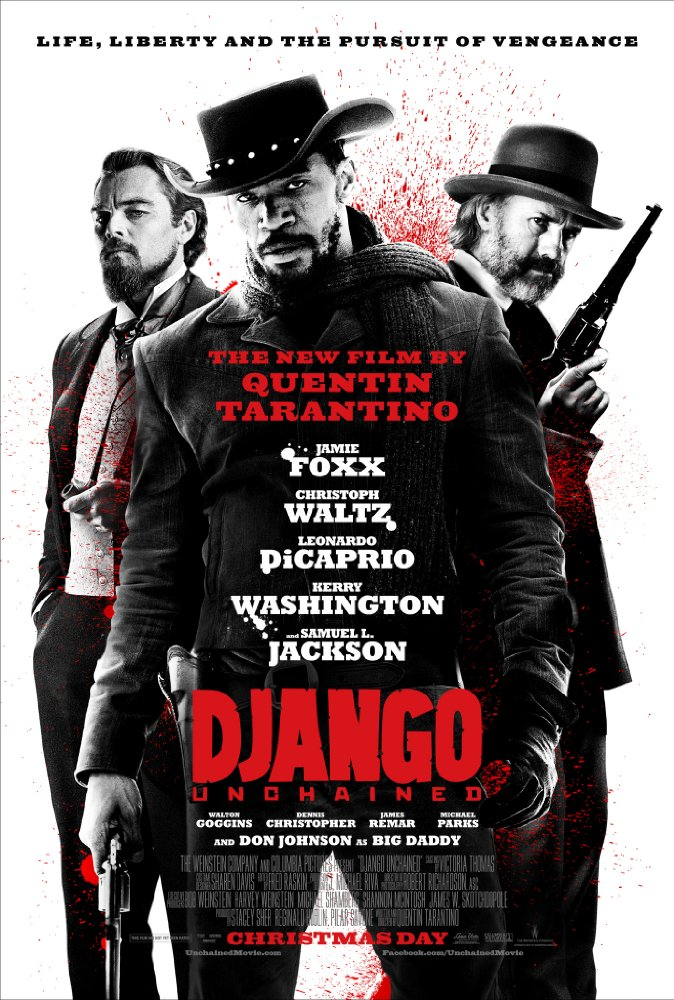
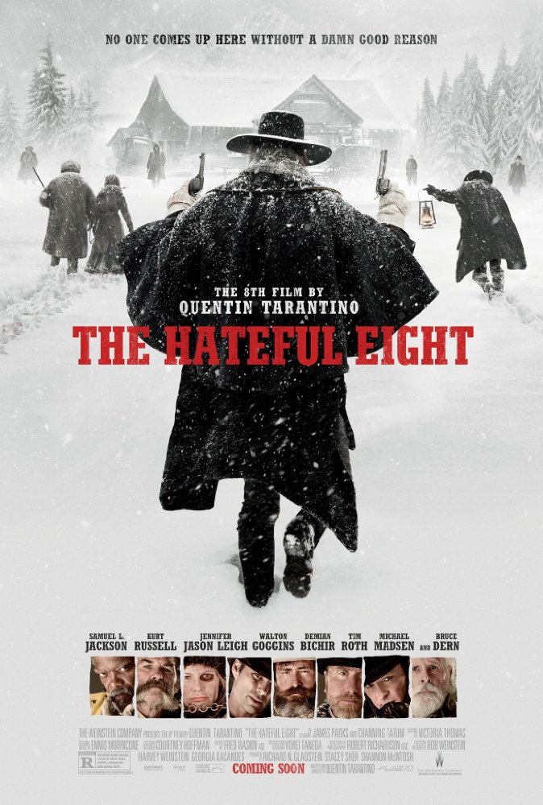

About:After a simple jewelry heist goes terribly wrong, the surviving criminals begin to suspect that one of them is a police informant.
8.9
%94
About:The lives of two mob hitmen, a boxer, a gangster's wife, and a pair of diner bandits intertwine in four tales of violence and redemption.
8.1
%85
About:After awakening from a four-year coma, a former assassin wreaks vengeance on the team of assassins who betrayed her.
8.0
%84
About:The Bride continues her quest of vengeance against her former boss and lover Bill, the reclusive bouncer Budd, and the treacherous, one-eyed Elle.
8.3
%88
About:In Nazi-occupied France during World War II, a plan to assassinate Nazi leaders by a group of Jewish U.S. soldiers coincides with a theatre owner's vengeful plans for the same.

8.4
%86
About:With the help of a German bounty hunter, a freed slave sets out to rescue his wife from a brutal Mississippi plantation owner.

7.8
%74
About:In the dead of a Wyoming winter, a bounty hunter and his prisoner find shelter in a cabin currently inhabited by a collection of nefarious characters.
")
 %91
%91")
")
")
")